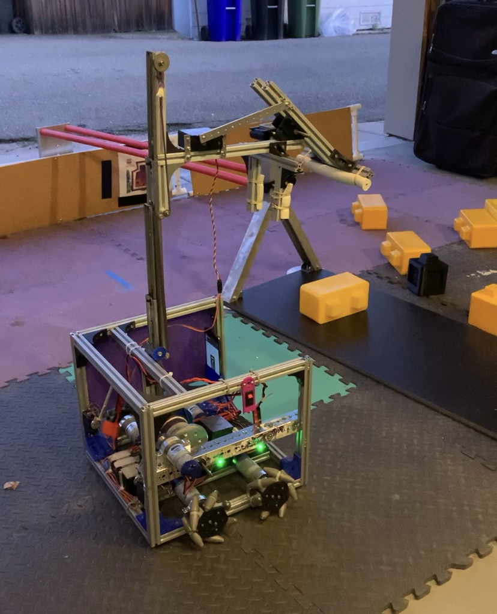
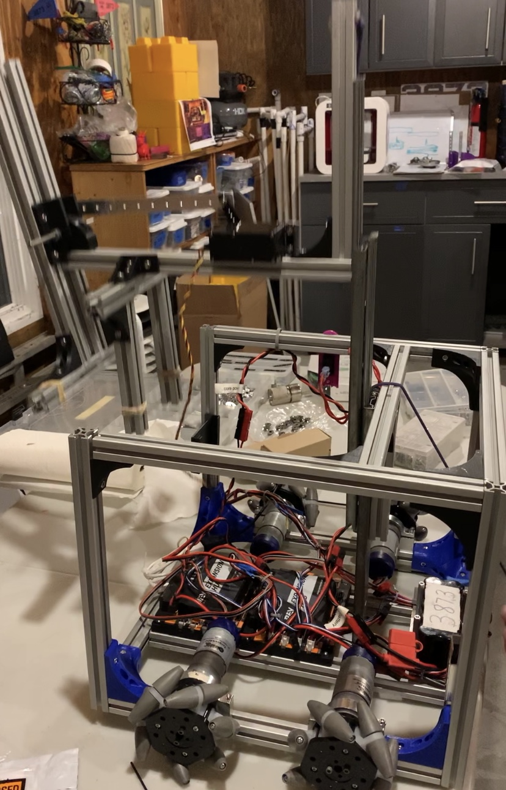

2019 - 2020: John Quixote


Absolutely Savage
Scotbotics decided to name our robot the John Quixote (nicknamed “John”) after the Spanish tale of Don Quixote and our Honors Chemistry teacher, Mr. John Savage. Created in 1604, the story of Don Quixote surrounds a man becoming incredibly entranced with the idea of chivalry and adventure that he decides to enter into the world of knighthood and open his imaginative eyes to the world around him. With his partner-in-crime who compliments his personality, they venture into , so our robot acts as a tribute to the iconic piece of literature.
John Quixote competed in the 2019-2020 FIRST game, Skystone and is designed to travel in the arena, open its arm, grab the stones and move them onto the foundation. It can raise its arm and stack the stones up to five high. It can also utilize its foundation puller to tug the foundation into and out of the building site. However, John has not always functioned with this much grace and our team has had to make adjustments. The robot utilizes many different 3D printed parts that each went through several iterations before arriving at a satisfactory design. The team has hundreds of CAD files allowing a wide variety of customization and swapping for final designs. Before settling on our current design, Scotbotics created three robot designs, two of which were named the JohnBot and Don Quixote. We decided to settle on the John Quixote since it was a mix between the two designs and allowed us to have both a sleek, and mechanical design and smooth functioning movement.
- The overall shape of our robot is cubical in order to keep the wheels as far apart as possible to keep the robot physically stable and able to move.
- The mecanum wheels not only move in basic directions but are also able to glide and shift in angles. This allows the robot to move easily during competitions.
- The foundation puller is made of metal in order to restrict bending and allow it to tug the large foundation without any flex.
- The upward mechanism (also known as “the lift”) uses drawer slides and a motor to keep the movement stable and allow a smooth lifting motion upwards and downwards. The length of the drawer slides and the motor’s connection to the pulley system enables it to rise up to five stones.
- The arm utilizes foam pieces and rubber bands to grip the pieces and prevent any accidental drops
- The servo open and closes the arm allowing it to clamp down on the stones and hold them with a tight grip.
- The sensors allow our autonomous system to recognize silver and gold minerals and distinguish them from each other.
Fun fact about robot: Scotbotics has several hundred CAD files on John Quixote, and many of the parts of the robot are made from 3D printing.